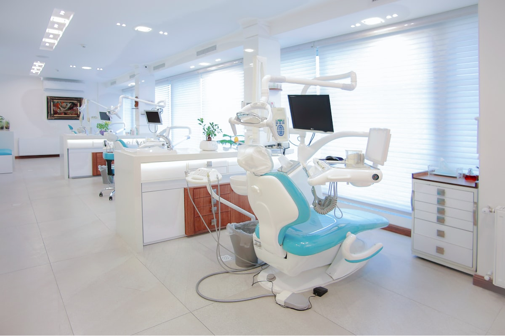
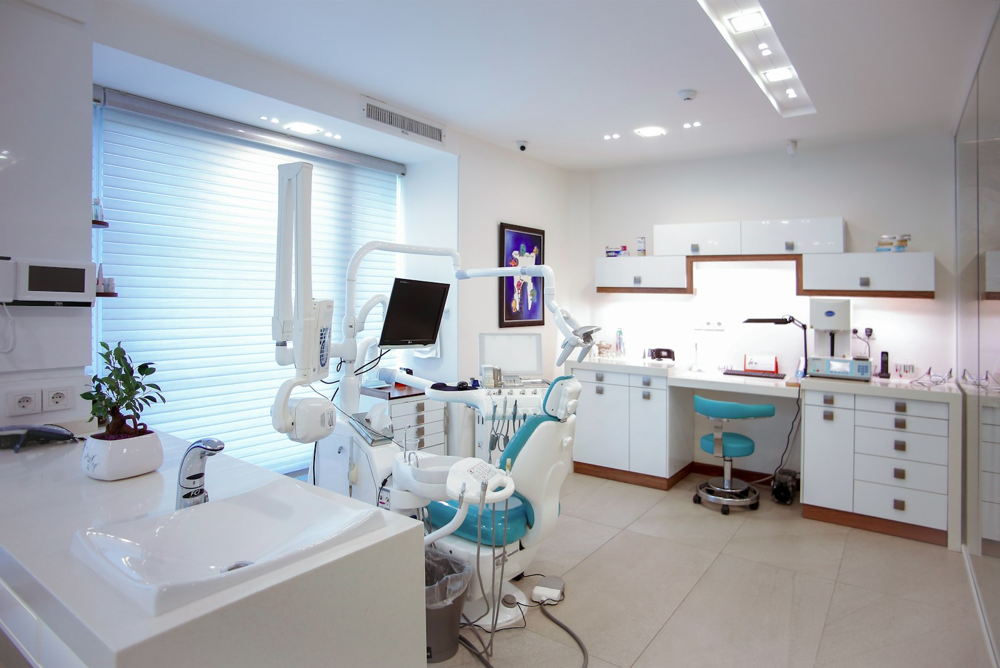
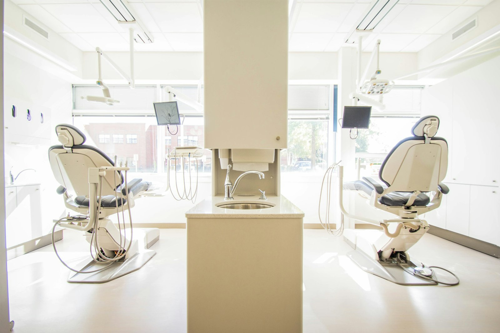
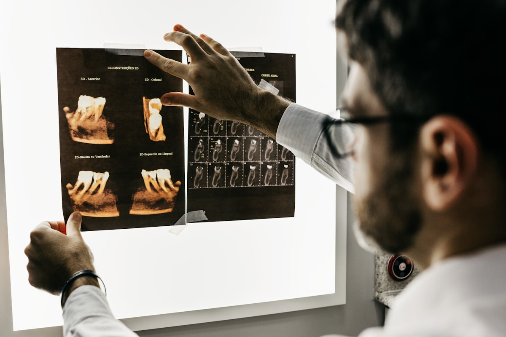

About our clinic
Modern dentistry, centered around you.
Learn about our approach, clinic environment, technology, and commitment to comfortable dental care.

Our story
Started with two chairs and a clear idea
Aurelia Dental Studio opened in 2016, when Dr. Eleanor Vance left a large group practice to build something smaller and more deliberate: a clinic where appointment times are generous, treatment plans are written down, and patients see the same familiar faces at every visit.
The studio has grown since then — a full clinical team, dedicated hygiene suites, and on-site imaging — but the founding idea hasn't changed. We would rather do fewer things carefully than many things quickly.
Today, most of our new patients still arrive the way our first ones did: on the recommendation of someone they trust.

Our philosophy
How we think about dentistry
"The best dental work is the kind you rarely need. Our job is to explain clearly, treat precisely, and help you keep your own teeth for as long as possible." Dr. Eleanor Vance — Founder
- Prevention first. Regular care and early intervention prevent most of the treatment people fear.
- Personalized plans. Your history, your goals, and your budget shape the plan — not a template.
- Honest communication. We explain what we see, what we recommend, and what can reasonably wait.
- Long-term thinking. We plan treatment for the next decade of your oral health, not the next invoice.
Our approach
What a visit with us actually looks like
Whether it's a routine check-up or a full treatment plan, every patient moves through the same careful sequence.
-
Consultation
We start with a conversation — your dental history, your concerns, and what you want to achieve. No treatment happens at this first meeting unless you ask for it.
-
Examination & diagnosis
A thorough clinical exam with digital imaging where needed. We show you what we see on screen and explain it in plain language.
-
Treatment planning
You receive a written plan with clear options, sequencing, and pricing. You take it home, think about it, and decide in your own time.
-
Treatment
Appointments are scheduled with enough time to work carefully and answer questions. Tell us if you need a pause — we'll stop.
-
Follow-up & prevention
After treatment, we agree on a recall schedule and a simple home-care routine, so results last and future visits stay routine.
Our environment
A studio designed to lower your shoulders
Dental anxiety is common, and the building itself can help or hurt. We designed our studio to help: natural light, quiet rooms, and no overlapping chairs.

Technology & facilities
Modern tools, in service of simpler visits
We invest in equipment only where it makes your care more precise, faster, or more comfortable. Technology never replaces clinical judgment — it supports it.
- Digital radiography — detailed images with significantly less radiation than traditional film, ready in seconds.
- Intraoral cameras — see exactly what your dentist sees, on screen, during your exam.
- On-site panoramic imaging — full-jaw scans for implant and orthodontic planning, without a referral elsewhere.
- Documented sterilization — hospital-grade instrument reprocessing with tracked cycles for every tray.

Next steps
Come and see the studio for yourself
The easiest way to understand how we work is to visit. Book a first consultation, or take a moment to meet the dentists you'd be trusting with your care.